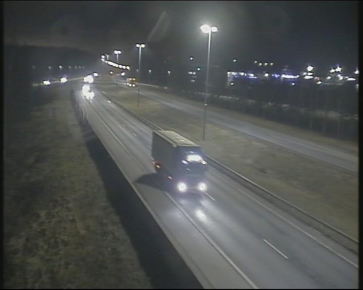

from IPython.display import Image
from llmcam.gpt4v import *
from llmcam.yolo import *
from llmcam.fn_to_fc import *
from llmcam.downloader import *
import jsonbuild an addressbook of camera installed address, and image capture url
[
{
"address": <camera installed location>,
"url": <capture image url>,
},
{
"address": <camera installed location>,
"url": <capture image url>,
},
....
]def build_address_book(stations_url:str):
table = []
stations = requests.get(stations_url).json()['features']
for station in stations:
station = requests.get(stations_url+'/'+station['id']).json().get('properties')
if not station:
continue
for preset in station['presets']:
try:
addr = ",".join([preset['presentationName'], station['names'].get('fi'), station['municipality'], station['province']])
except:
continue
info = {
#"id": preset['id'],
"address": addr,
"url": preset['imageUrl'],
}
table.append(info)
return tabledef address_book(stations_url:str=stations_url, force_update=False):
"""get an address book [{"address":<camera installed address>, "url":<image capture url>}]"""
if not force_update and os.path.exists("preset_image_url.json"):
with open("preset_image_url.json", "r") as f:
return json.load(f)
raise
data = build_address_book(stations_url)
with open("preset_image_url.json", "w") as f:
json.dump(data, f, indent=4)
return datacamera_address_book
camera_address_book (stations_url:str='https://tie.digitraffic.fi/api/wea thercam/v1/stations', update:bool=False)
get weather camera location addressbook of camera location:image url. You can get an capture of camera from this url
| Type | Default | Details | |
|---|---|---|---|
| stations_url | str | https://tie.digitraffic.fi/api/weathercam/v1/stations | Weather Camera URL |
| update | bool | False | Update addressbook forcely |
| Returns | str | List of "camera location":"image url" |
tools = [tool_schema(f) for f in [camera_address_book, download_file, ask_gpt4v_about_image_file]]
msgs = form_msgs([
("system", "You are a helpful system administrator. Use the supplied tools to assist the user."),
("user", "Pick up the camera location closer to Espoo Kehä I Itään from camera address book"),
])
complete(msgs, tools=tools)
msgs.append(form_msg("user", "download captured images"))
complete(msgs, tools=tools)
msgs.append(form_msg("user", "How many cars are seen?"))
complete(msgs, tools=tools)
print_msgs(msgs)>> System:
You are a helpful system administrator. Use the supplied tools to assist the user.
>> User:
Pick up the camera location closer to Espoo Kehä I Itään from camera address book
>> Assistant:
The camera location closer to Espoo Kehä I Itään is located at: - Address: Kehä1 - Itään, Tie 101
Espoo Turvesuontie, Espoo, Uusimaa - Camera Image URL: [View
Image](https://weathercam.digitraffic.fi/C0152101.jpg) You can view the real-time image from this
weather camera by following the link provided.
>> User:
download captured images
>> Assistant:
The captured image from the camera at Kehä1 - Itään, Espoo Turvesuontie has been downloaded
successfully. You can find the image file saved as
[Kehä1_Itään_Espoo_Turvesuontie.jpg](sandbox:/Kehä1_Itään_Espoo_Turvesuontie.jpg).
>> User:
How many cars are seen?
>> Assistant:
There are 15 cars visible in the captured image from the Kehä1 - Itään, Espoo Turvesuontie camera.Simple capture function
stations
stations (key:str)
Get all weather station including key word
Porvoos = stations("Porvoo")
assert "porvoo" in Porvoos[0]['properties']['name'].lower()presets
presets (station:dict)
Get all presets at a given weather station
preset = presets(Porvoos[0])[0]
imageUrl = preset['imageUrl']
print(imageUrl)
assert "jpg" in imageUrlhttps://weathercam.digitraffic.fi/C0150200.jpgcapture
capture (preset:dict)
Capture image at a given preset location in a Weather station, and return an image path
preset{'id': 'C0150200',
'presentationName': 'Porvoo',
'inCollection': True,
'resolution': '704x576',
'directionCode': '0',
'imageUrl': 'https://weathercam.digitraffic.fi/C0150200.jpg',
'direction': 'UNKNOWN'}hdr, path = capture(preset)
hdr{'Content-Type': 'image/jpeg', 'Content-Length': '60012', 'Connection': 'keep-alive', 'x-amz-id-2': 'w+yqdpf7tZ9TDum/EbtricEAo7ZKhFBapv8ZUJkdgtuNrpq3tLAsSEkftWwgJTNMOQSrrNBnRtkBGZxDeJ43xWFX4N91PVXK', 'x-amz-request-id': 'RBE1D921ZZWEB5HH', 'Date': 'Mon, 02 Dec 2024 15:56:45 GMT', 'last-modified': 'Mon, 02 Dec 2024 15:53:57 GMT', 'x-amz-expiration': 'expiry-date="Wed, 04 Dec 2024 00:00:00 GMT", rule-id="Delete versions and current images after 24h"', 'ETag': '"a861dea222eb420ce843ab452b951c48"', 'x-amz-server-side-encryption': 'AES256', 'X-Amz-Meta-Last-Modified': 'Mon, 02 Dec 2024 15:53:57 GMT', 'x-amz-version-id': '56F0NGOAtHYClDerv02t8aouHe6DXYUB', 'Accept-Ranges': 'bytes', 'Server': 'AmazonS3', 'X-Cache': 'Miss from cloudfront', 'Via': '1.1 f13aef0c4b52f6f681401f232d03eb68.cloudfront.net (CloudFront)', 'X-Amz-Cf-Pop': 'HIO50-C1', 'Alt-Svc': 'h3=":443"; ma=86400', 'X-Amz-Cf-Id': 'bZ16EpFgXU3OqxtBO7Yqj3bJCF48sWd5j8_ShgdGzXsZhbTKnqwzyA=='}display(Image.open(path))
cap
cap (key:str='Porvoo')
Capture an image at specified location, save it, and return its path
| Type | Default | Details | |
|---|---|---|---|
| key | str | Porvoo | location keyword |
| Returns | str |
path = cap("porvoo")
print(path)
ask_gpt4v(path)../data/cap_2024.12.02_15:53:57_Porvoo_C0150200.jpg{'dimensions': '720 x 576',
'building': 0,
'car': 4,
'truck': 1,
'available_parking_space': 0,
'street_lights': 7,
'person': 0,
'time_of_day': 'night',
'artificial_lighting': 'prominent',
'visibility_clear': True,
'sky_visible': True,
'sky_light_conditions': 'dark'}detect_objects(cap('porvoo'))
image 1/1 /home/doyu/00llmcam/nbs/../data/cap_2024.12.02_15:53:57_Porvoo_C0150200.jpg: 512x640 1 car, 208.4ms
Speed: 7.1ms preprocess, 208.4ms inference, 6.1ms postprocess per image at shape (1, 3, 512, 640)'{"car": 1}'def __ask_gpt4v(
path: str # file path to analyze
)->str:
"ask gpt4v to analyze an image given"
return json.dumps(ask_gpt4v(path))__ask_gpt4v
__ask_gpt4v (path:str)
ask gpt4v to analyze an image given
| Type | Details | |
|---|---|---|
| path | str | file path to analyze |
| Returns | str |
tools = [tool_schema(f) for f in [cap, detect_objects, __ask_gpt4v] ]
tools[{'type': 'function',
'function': {'name': 'cap',
'description': 'Capture an image at specified location, save it, and return its path',
'parameters': {'type': 'object',
'properties': {'key': {'type': 'string',
'description': 'location keyword'}},
'required': []},
'metadata': {'module': '__main__', 'service': '__main__'}}},
{'type': 'function',
'function': {'name': 'detect_objects',
'description': 'Detect object in the input image.',
'parameters': {'type': 'object',
'properties': {'image_path': {'type': 'string',
'description': 'Path/URL of image'},
'conf': {'type': 'number', 'description': 'Confidence threshold'}},
'required': ['image_path']},
'metadata': {'module': 'llmcam.yolo', 'service': 'llmcam.yolo'}}},
{'type': 'function',
'function': {'name': '__ask_gpt4v',
'description': 'ask gpt4v to analyze an image given',
'parameters': {'type': 'object',
'properties': {'path': {'type': 'string',
'description': 'file path to analyze'}},
'required': ['path']},
'metadata': {'module': '__main__', 'service': '__main__'}}}]def callback(name, tools=[], **kwargs): return globals().get(name)(**kwargs)msgs = form_msgs([
("system", "You are a helpful system administrator. Use the supplied tools to assist the user."),
("user", "Capture an image in Porvoo and tell me the path"),
])
complete(msgs, tools=tools)('assistant',
'The image has been captured in Porvoo. You can find it at the following path: `../data/cap_2024.12.02_15:53:57_Porvoo_C0150200.jpg`.')msgs.append(form_msg("user", f"analyze this captured image"))
complete(msgs, tools=tools)('assistant',
'The analysis of the captured image from Porvoo reveals the following details:\n\n- **Dimensions**: 720 x 576 pixels\n- **Objects Detected**:\n - 1 Truck\n - 4 Cars\n - 5 Street lights\n- **Time of Day**: Night\n- **Lighting Conditions**: Prominent artificial lighting\n- **Visibility**: Clear\n- **Sky Visibility**: Not visible\n- **Water Bodies**: Not visible\n\nThis suggests a clear night scene with vehicular presence and strong street lighting.')msgs.append(form_msg("user", "Can you detect objects in the file?"))
complete(msgs, tools=tools)
image 1/1 /home/doyu/00llmcam/nbs/../data/cap_2024.12.02_15:53:57_Porvoo_C0150200.jpg: 512x640 1 car, 162.3ms
Speed: 2.2ms preprocess, 162.3ms inference, 1.0ms postprocess per image at shape (1, 3, 512, 640)('assistant',
'The object detection in the captured image from Porvoo identified the following:\n\n- **1 Car**\n\nIt seems there was one car detected in the image.')